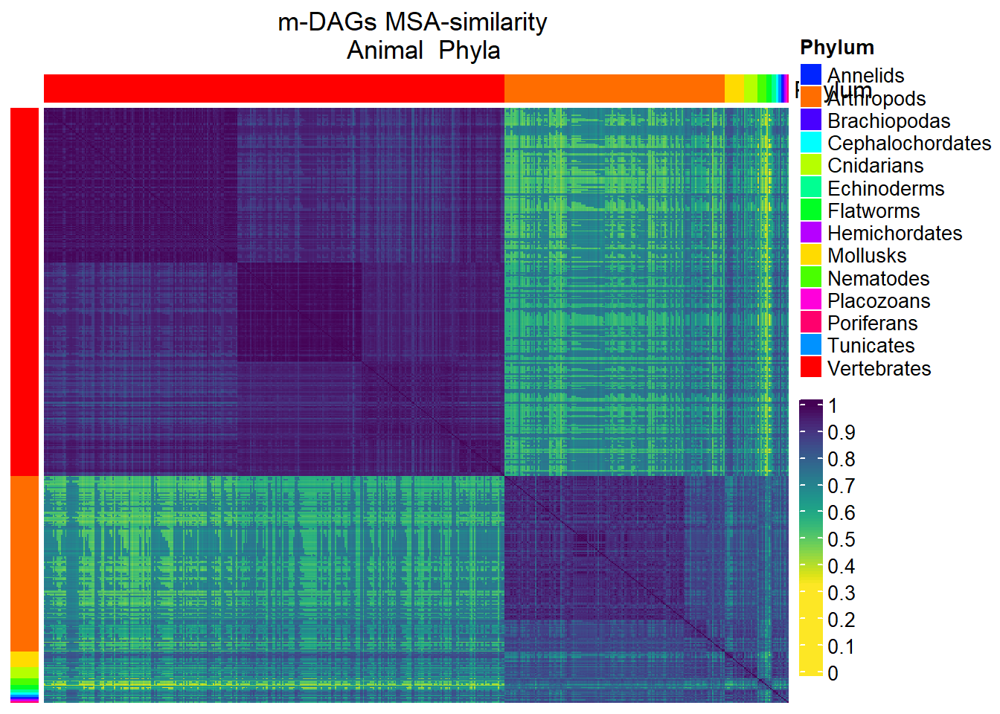
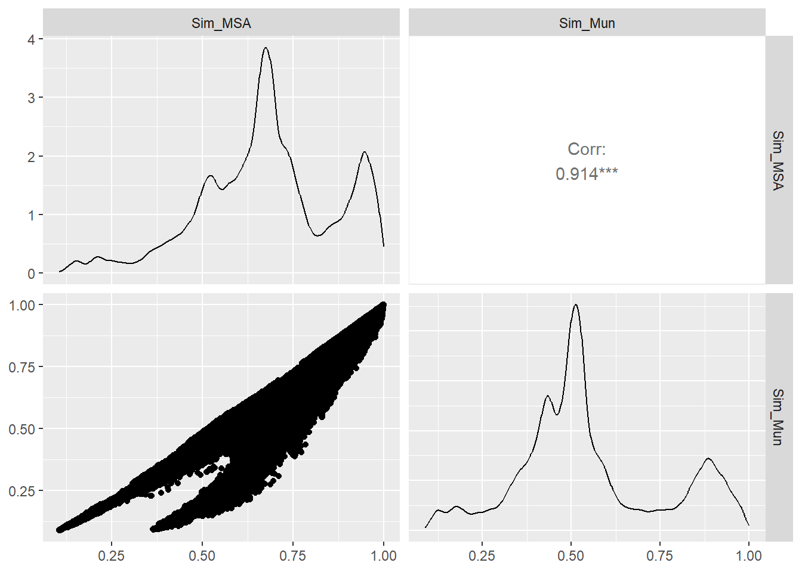
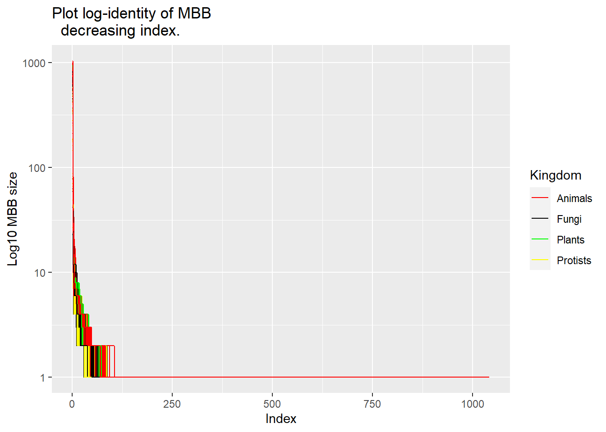
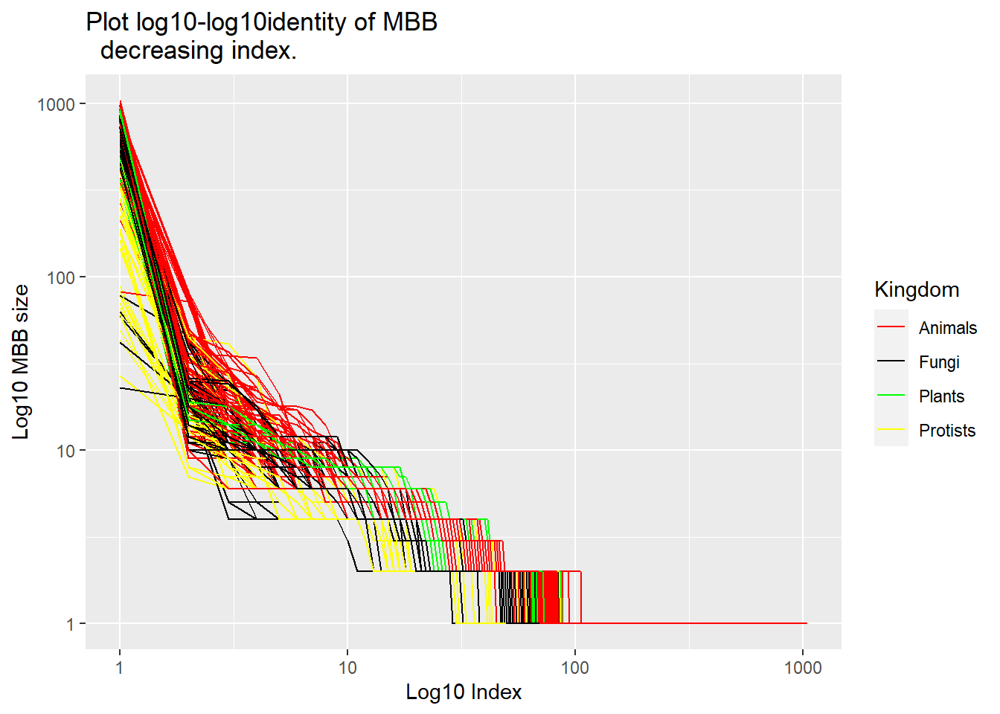
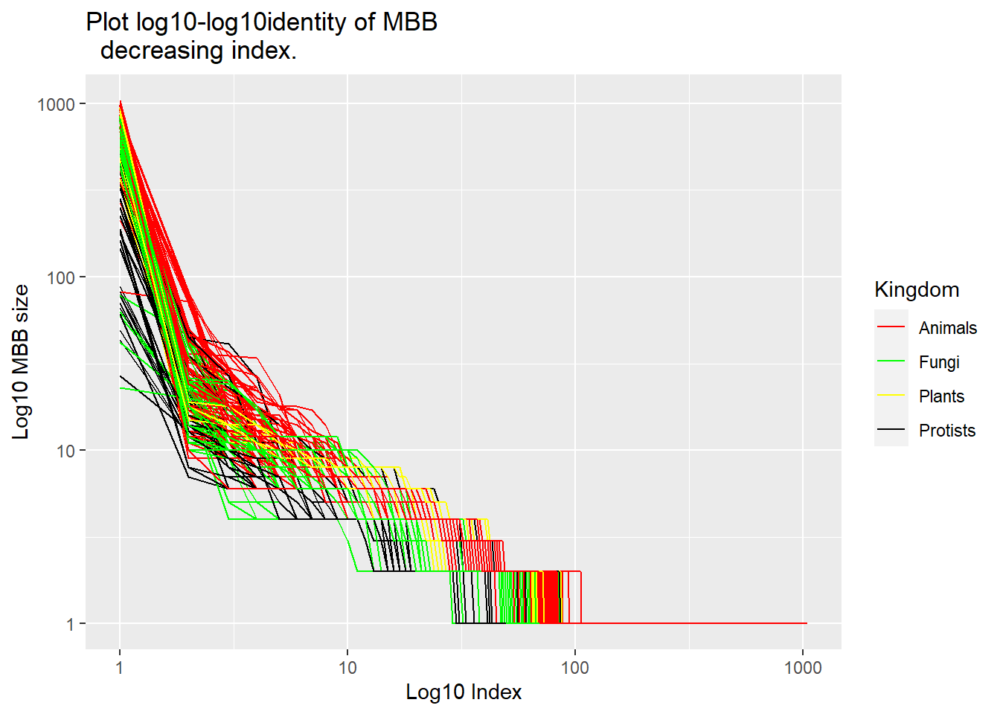
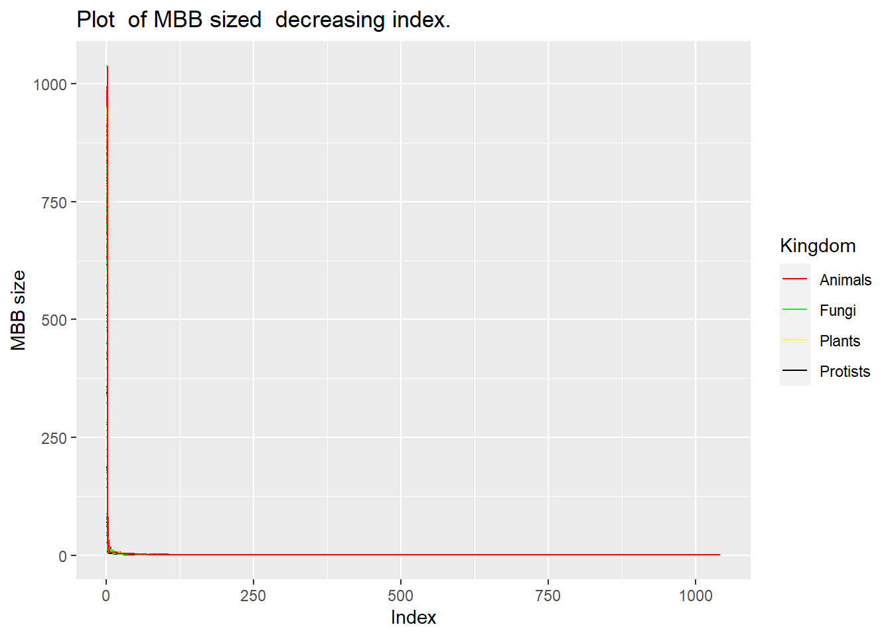
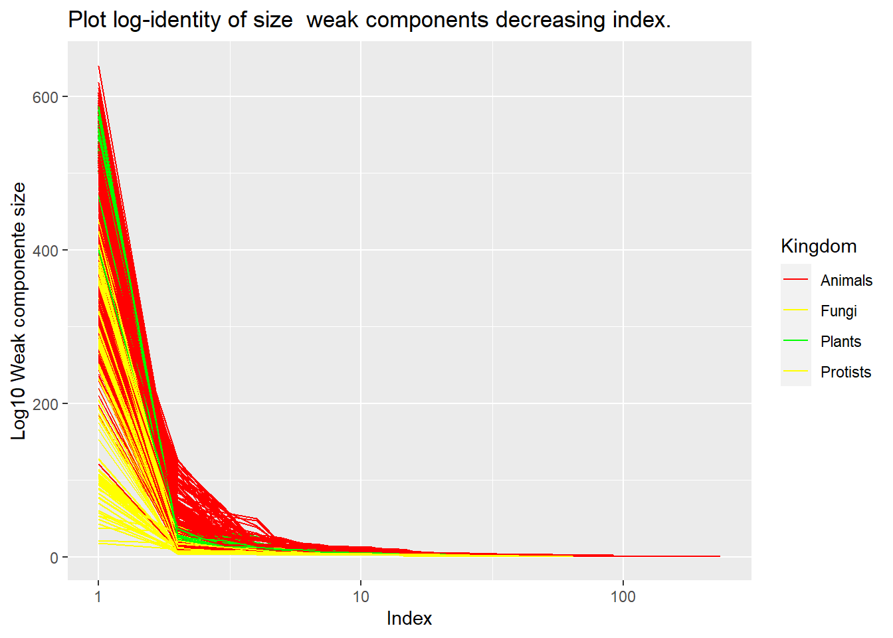

library(tidyverse)
library(igraph)
library(ComplexHeatmap)
library(viridis)
library(circlize)
library(plotly)
library(randomcoloR)
library(factoextra)
library(RColorBrewer)
library(kableExtra)
library(igraph)
library(GGally)A Guide to Interpreting the Results of MetaDAG Analysis
As an illustrative example for interpreting metaDag results, we consider here the Eukaryotes test presented in Section 2.5. Namely, we consider all Eukaryotes from the KEGG database.
The source files for this example can be obtained from https://github.com/biocom-uib/metadag.
First of all, results must be downloaded from:
Hash: 0a845f74-826e-3b46-aed9-e7ecf74db262
URL: https://bioinfo.uib.es/metadag/handleExperiment/result_0a845f74-826e-3b46-aed9-e7ecf74db262
and saved in the folder:
“data/result_0a845f74-826e-3b46-aed9-e7ecf74db262”.


1 Load data
experiment=
"result_0a845f74-826e-3b46-aed9-e7ecf74db262/"
path_exp=paste0("data/",experiment)
knitr::kable(data.frame(
Directory_files_and_folders=dir(path_exp),
Type=c(rep("Data file",2),
rep("Directory",3),
rep("Data file",6),
"Directory")))| Directory_files_and_folders | Type |
|---|---|
| Different_MBB.csv | Data file |
| Different_mDAG.csv | Data file |
| Global | Directory |
| Groups | Directory |
| Individuals | Directory |
| Report.pdf | Data file |
| Results.csv | Data file |
| Similarities_MBB_MSAMethod.csv | Data file |
| Similarities_MBB_MunkresMethod.csv | Data file |
| Similarities_mDAG_MSAMethod.csv | Data file |
| Similarities_mDAG_MunkresMethod.csv | Data file |
| TaxonomyLevels | Directory |
MBB=read_csv(paste0(path_exp,"Different_MBB.csv"),
show_col_types = FALSE)
mDAG=read_csv(paste0(path_exp,"Different_mDAG.csv"),
show_col_types = FALSE)
Results=read_csv(paste0(path_exp,"Results.csv"),
show_col_types = FALSE)
save(MBB,mDAG,Results,
file="MBB_mDag_Results.Rdata")1.1 Table of MBBs
In this example MBB is a table with 5149 rows and 4122 columns. It displays, for every MBB, the selected groups (Kingdoms, families, etc.) to which it belongs.
#100
knitr::kable(MBB[1:20,1:10]) %>%
scroll_box(width = "100%", height = "200px")| MBB Id | natural | #pathways | Protists | Fungi | Plants | Animals | Alveolates | Amoebozoa | Annelids |
|---|---|---|---|---|---|---|---|---|---|
| 0 | 0 | 0 | 0 | 0 | 0 | 0 | 0 | 0 | 0 |
| 0.0 | 0 | 0 | 0 | 0 | 0 | 0 | 0 | 0 | 0 |
| 0.0.0 | 0 | 0 | 0 | 0 | 0 | 0 | 0 | 0 | 0 |
| 0.0.0.0 | 1 | 1 | 0 | 0 | 0 | 1 | 0 | 0 | 0 |
| 0.0.0.0.0 | 1 | 1 | 0 | 0 | 0 | 1 | 0 | 0 | 0 |
| 0.0.0.0.0.0 | 1 | 1 | 0 | 0 | 0 | 1 | 0 | 0 | 0 |
| 0.0.0.1 | 1 | 1 | 0 | 0 | 0 | 1 | 0 | 0 | 0 |
| 0.0.0.2 | 1 | 1 | 0 | 0 | 0 | 1 | 0 | 0 | 0 |
| 0.0.1 | 0 | 0 | 0 | 0 | 0 | 0 | 0 | 0 | 0 |
| 0.0.1.0 | 1 | 1 | 0 | 0 | 0 | 1 | 0 | 0 | 1 |
| 0.0.1.1 | 1 | 1 | 1 | 0 | 0 | 0 | 0 | 0 | 0 |
| 0.0.1.1.0 | 1 | 1 | 1 | 0 | 0 | 0 | 0 | 0 | 0 |
| 0.0.1.2 | 1 | 1 | 0 | 0 | 0 | 1 | 0 | 0 | 0 |
| 0.0.1.3 | 1 | 1 | 0 | 0 | 0 | 1 | 0 | 0 | 0 |
| 0.0.1.4 | 1 | 1 | 0 | 0 | 0 | 1 | 0 | 0 | 0 |
| 0.0.1.4.0 | 1 | 1 | 0 | 0 | 0 | 1 | 0 | 0 | 0 |
| 0.0.1.4.0.0 | 1 | 1 | 0 | 0 | 0 | 1 | 0 | 0 | 0 |
| 0.0.1.5 | 1 | 1 | 1 | 0 | 0 | 0 | 0 | 0 | 0 |
| 0.0.1.6 | 1 | 4 | 3 | 0 | 0 | 1 | 0 | 0 | 0 |
| 0.0.1.6.0 | 1 | 3 | 0 | 0 | 3 | 0 | 0 | 0 | 0 |
1.2 Table of m-DAGs
In this example mDAG is a table with 884 rows and 5278 columns. It displays, for every m-DAG, the selected groups (Kingdoms, families, etc.) in which it belongs.
kable(mDAG[1:20,1:10]) %>% scroll_box(width = "100%", height = "200px")| mDAG Id | #Categories | Animals | Plants | Fungi | Protists | Alveolates | Amoebozoa | Annelids | Arthropods |
|---|---|---|---|---|---|---|---|---|---|
| 0001 | 3 | 1 | 0 | 0 | 0 | 0 | 0 | 0 | 0 |
| 0002 | 2 | 0 | 0 | 1 | 0 | 0 | 0 | 0 | 0 |
| 0003 | 2 | 1 | 0 | 0 | 0 | 0 | 0 | 0 | 0 |
| 0004 | 3 | 1 | 0 | 0 | 0 | 0 | 0 | 0 | 0 |
| 0005 | 3 | 1 | 0 | 0 | 0 | 0 | 0 | 0 | 0 |
| 0006 | 3 | 0 | 1 | 0 | 0 | 0 | 0 | 0 | 0 |
| 0007 | 2 | 0 | 1 | 0 | 0 | 0 | 0 | 0 | 0 |
| 0008 | 3 | 0 | 1 | 0 | 0 | 0 | 0 | 0 | 0 |
| 0009 | 3 | 0 | 1 | 0 | 0 | 0 | 0 | 0 | 0 |
| 0010 | 3 | 1 | 0 | 0 | 0 | 0 | 0 | 0 | 0 |
| 0011 | 3 | 1 | 0 | 0 | 0 | 0 | 0 | 0 | 0 |
| 0012 | 3 | 0 | 0 | 0 | 1 | 0 | 0 | 0 | 0 |
| 0013 | 3 | 1 | 0 | 0 | 0 | 0 | 0 | 0 | 0 |
| 0014 | 3 | 0 | 0 | 0 | 1 | 1 | 0 | 0 | 0 |
| 0015 | 2 | 0 | 0 | 1 | 0 | 0 | 0 | 0 | 0 |
| 0016 | 3 | 0 | 0 | 0 | 1 | 0 | 1 | 0 | 0 |
| 0017 | 3 | 1 | 0 | 0 | 0 | 0 | 0 | 0 | 0 |
| 0018 | 3 | 1 | 0 | 0 | 0 | 0 | 0 | 0 | 0 |
| 0019 | 3 | 1 | 0 | 0 | 0 | 0 | 0 | 0 | 1 |
| 0020 | 3 | 1 | 0 | 0 | 0 | 0 | 0 | 0 | 0 |
dim(mDAG)[1] 884 5278names(mDAG)[1:6][1] "mDAG Id" "#Categories" "Animals" "Plants" "Fungi"
[6] "Protists" head(names(mDAG)[7:(dim(mDAG)[2]-1150)])[1] "Alveolates" "Amoebozoa" "Annelids"
[4] "Arthropods" "Ascomycetes" "Basal angiosperms"# 28 to 1213 code MBB: 1 if MBB in mDAG 01.3 Results Table
The Results table contains for every organism (row) the following information: its category (taxonomy), selected group, Full name, m-DAG id and all reactions name id with their corresponding enzyme. When a reaction is present in the corresponding m-DAG, the MBB to which it belongs is displayed in this column.
kable(Results[1:20,1:10])%>%
row_spec(0, angle = 0) %>%
scroll_box(width = "300%", height = "1000px")| organism | Categories | Groups | mDAG Id | Full Name | R00710(1.2.1.3) | R00710_rev(1.2.1.3) | R00711(1.2.1.5) | R00711_rev(1.2.1.5) | R00755(4.1.1.1) |
|---|---|---|---|---|---|---|---|---|---|
| aaf | Protists|Stramenopiles|Pelagophytes | MSA Cluster 3|MUN Cluster 3 | 0036 | Aureococcus anophagefferens | 0.0.10.0.15 | 0.0.10.0.15 | NA | NA | NA |
| aag | Animals|Arthropods|Insects | MSA Cluster 2|MUN Cluster 2 | 0035 | Aedes aegypti (yellow fever mosquito) | 0.9.27.7.36.14 | 0.9.27.7.36.14 | NA | NA | NA |
| aalb | Animals|Arthropods|Insects | MSA Cluster 2|MUN Cluster 2 | 0276 | Aedes albopictus (Asian tiger mosquito) | 0.9.27.7.36.18 | 0.9.27.7.36.18 | NA | NA | NA |
| aali | Animals|Arthropods|Insects | MSA Cluster 2|MUN Cluster 2 | 0267 | Anopheles albimanus | 0.9.27.7.36.65 | 0.9.27.7.36.65 | 0.9.27.7.36.65 | 0.9.27.7.36.65 | NA |
| aalt | Fungi|Ascomycetes|Dothideomycetes | Fungui and Algae|MSA Cluster 3|MSA Fungui and Nematodes and Flatworms|MUN Cluster 3|MUN Fungui and Nematodes and Flatworms | 0240 | Alternaria alternata | 0.0.9.20.0.5.6.7 | 0.0.9.20.0.5.6.7 | NA | NA | 0.0.9.20.0.5.6.7 |
| aam | Animals|Vertebrates|Birds | Cluster 1 | 0040 | Apteryx mantelli mantelli (North Island brown kiwi) | 0.9.26.15.46 | 0.9.26.15.46 | 0.9.26.15.46 | 0.9.26.15.46 | NA |
| aamp | Animals|Vertebrates|Mammals | Cluster 1 | 0313 | Arvicola amphibius (Eurasian water vole) | 0.9.26.18.2.0 | 0.9.26.18.2.0 | 0.9.26.18.2.0 | 0.9.26.18.2.0 | NA |
| aang | Animals|Vertebrates|Fishes | Cluster 1 | 0317 | Anguilla anguilla (European eel) | 0.9.26.17.0.0 | 0.9.26.17.0.0 | 0.9.26.17.0.0 | 0.9.26.17.0.0 | NA |
| aara | Animals|Arthropods|Insects | MSA Cluster 2|MUN Cluster 2 | 0362 | Anopheles arabiensis | 0.9.27.7.36.34 | 0.9.27.7.36.34 | 0.9.27.7.36.34 | 0.9.27.7.36.34 | NA |
| abe | Fungi|Ascomycetes|Eurotiomycetes | Fungui and Algae|MSA Cluster 3|MSA Fungui and Nematodes and Flatworms|MUN Cluster 3|MUN Fungui and Nematodes and Flatworms | 0060 | Trichophyton benhamiae | 0.0.9.20.0.5.7.0 | 0.0.9.20.0.5.7.0 | NA | NA | 0.0.9.20.0.5.7.0 |
| abp | Fungi|Basidiomycetes | Fungui and Algae|MSA Cluster 3|MSA Fungui and Nematodes and Flatworms|MUN Cluster 3|MUN Fungui and Nematodes and Flatworms | 0068 | Agaricus bisporus var. burnettii JB137-S8 | 0.0.9.20.0.6.1 | 0.0.9.20.0.6.1 | NA | NA | 0.0.9.20.0.6.1 |
| abv | Fungi|Basidiomycetes | Fungui and Algae|MSA Cluster 3|MSA Fungui and Nematodes and Flatworms|MUN Cluster 3|MUN Fungui and Nematodes and Flatworms | 0073 | Agaricus bisporus var. bisporus H97 | 0.0.9.20.0.6.3 | 0.0.9.20.0.6.3 | NA | NA | 0.0.9.20.0.6.3 |
| acan | Protists|Amoebozoa|Acanthamoeba | MSA Cluster 3|MUN Cluster 3 | 0873 | Acanthamoeba castellanii | 0.0.10.0.3 | 0.0.10.0.3 | NA | NA | NA |
| acar | Animals|Vertebrates|Birds | Cluster 1 | 0884 | Antrostomus carolinensis (chuck-will's-widow) | 0.9.26.15.59 | 0.9.26.15.59 | 0.9.26.15.59 | 0.9.26.15.59 | NA |
| acep | Animals|Arthropods|Insects | MSA Cluster 2|MUN Cluster 2 | 0054 | Atta cephalotes (leaf cutting ant) | 0.9.27.7.36.56 | 0.9.27.7.36.56 | NA | NA | NA |
| acer | Animals|Arthropods|Insects | MSA Cluster 2|MUN Cluster 2 | 0057 | Apis cerana (Asiatic honeybee) | 0.9.27.7.35.34 | 0.9.27.7.35.34 | 0.9.27.7.35.34 | 0.9.27.7.35.34 | NA |
| achc | Animals|Vertebrates|Birds | Cluster 1 | 0103 | Aquila chrysaetos chrysaetos (golden eagle) | 0.9.26.15.2.0 | 0.9.26.15.2.0 | 0.9.26.15.2.0 | 0.9.26.15.2.0 | NA |
| ache | Fungi|Ascomycetes|Eurotiomycetes | Fungui and Algae|MSA Cluster 3|MSA Fungui and Nematodes and Flatworms|MUN Cluster 3|MUN Fungui and Nematodes and Flatworms | 0106 | Aspergillus chevalieri | 0.0.9.20.0.5.7.2 | 0.0.9.20.0.5.7.2 | NA | NA | 0.0.9.20.0.5.7.2 |
| achl | Animals|Vertebrates|Birds | Cluster 1 | 0081 | Acanthisitta chloris (rifleman) | 0.9.26.15.1.1.0.0 | 0.9.26.15.1.1.0.0 | NA | NA | NA |
| acoz | Animals|Arthropods|Insects | MSA Cluster 2|MUN Cluster 2 | 0255 | Anopheles coluzzii | 0.9.27.7.36.22 | 0.9.27.7.36.22 | 0.9.27.7.36.22 | 0.9.27.7.36.22 | NA |
dim(Results)[1] 884 3998names(Results)[1]# organisms kegg id class representant of mDAG[1] "organism"names(Results)[2]# taxonomy separate by |[1] "Categories"names(Results)[3]# groups [1] "Groups"names(Results)[4]# mDAG_Id [1] "mDAG Id"names(Results)[5]# Full name representant[1] "Full Name"names(Results)[6:36]# columns 6 to 3998 [1] "R00710(1.2.1.3)" "R00710_rev(1.2.1.3)" "R00711(1.2.1.5)"
[4] "R00711_rev(1.2.1.5)" "R00755(4.1.1.1)" "R00746(1.1.1.2)"
[7] "R00746_rev(1.1.1.2)" "R00754(1.1.1.1)" "R00754_rev(1.1.1.1)"
[10] "R00014(4.1.1.1)" "R00014(1.2.4.1)" "R03270(1.2.4.1)"
[13] "R02569(2.3.1.12)" "R02569_rev(2.3.1.12)" "R00703(1.1.1.27)"
[16] "R00703_rev(1.1.1.27)" "R00200(2.7.1.40)" "R00658(4.2.1.11)"
[19] "R00658_rev(4.2.1.11)" "R01518(5.4.2.11)" "R01518_rev(5.4.2.11)"
[22] "R01061(1.2.1.12)" "R01061_rev(1.2.1.12)" "R01015(5.3.1.1)"
[25] "R01015_rev(5.3.1.1)" "R01070(4.1.2.13)" "R01070_rev(4.1.2.13)"
[28] "R04779(2.7.1.11)" "R04780(3.1.3.11)" "R02740(5.3.1.9)"
[31] "R02740_rev(5.3.1.9)" # reactions name id with its enzyme.reactions=names(Results)[-c(1:5)]
reverse_reactions=stringr::str_detect(reactions,"rev")
reverse_reactions=table(reverse_reactions)
dimnames(reverse_reactions)$reverse_reactions=
c("Non reverse reaction","Reverse reaction")
reverse_reactionsreverse_reactions
Non reverse reaction Reverse reaction
3399 594 2 Metabolic Graphs
We present here some analysis examples of the metabolic graphs generated in GraphML format.
2.1 Metabolic graphs for each organism
Read the individual metabolic graphs generated for Homo sapiens (KEGG id: hsa) in the directory(Individuals/hsa)
files_hsa=dir(paste0(path_exp,"Individuals/hsa"))
files_hsa [1] "hsa_mDAG.graphml" "hsa_mDAG.pdf" "hsa_mDAG.svg"
[4] "hsa_mDAG_adj.csv" "hsa_mDAG_biggerDAG.pdf" "hsa_mDAG_biggerDAG.svg"
[7] "hsa_mDAG_nl.csv" "hsa_mDAG_structure.csv" "hsa_R_adj.csv"
[10] "hsa_R_nl.csv" "hsa_RC.graphml" "hsa_RC.pdf"
[13] "hsa_RC.svg" "hsa_summary.txt" | files_Individual_hsa | Description |
|---|---|
| hsa_mDAG.graphml | m-DAG GraphML format |
| hsa_mDAG.pdf | m-DAG pdf graphic |
| hsa_mDAG.svg | m-DAG svg graphic |
| hsa_mDAG_adj.csv | csv file with the adjacency matrix of the m-DAG |
| hsa_mDAG_biggerDAG.pdf | pdf graphic with the biggest conected componet of the m-DAG |
| hsa_mDAG_biggerDAG.svg | svg graphic with the biggest conected componet of the m-DAG |
| hsa_mDAG_nl.csv | csv file with the node (MBBs) labels of the m-DAG |
| hsa_mDAG_structure.csv | csv file with all connected components of the m-DAG ??????? |
| hsa_R_adj.csv | csv file with the adjacency matrix of the reaction graph |
| hsa_R_nl.csv | csv file with the node (reactions) labels of the reaction graph |
| hsa_RC.graphml | reaction graph GraphML format |
| hsa_RC.pdf | reaction graph pdf graphic |
| hsa_RC.svg | reaction graph svg graphic |
| hsa_summary.txt | text summary file with the number of MBBs, reactions, etc. in the previous graphs |
2.2 Pan & core metabolic graphs
Pan and core metabolic graphs for every group were generated. For instance, one can read the pan and core metabolic graphs generated for the group Algae in the directory (Groups/Algae).
files_Algae=dir(paste0(path_exp,"Groups/Algae"))
files_Algae[1] "core" "pan" The global core reaction graph, which is the core of all the organisms’ reaction graphs in this Eukaryotes test, is empty.
graph_core_RC=read.graph(
paste0(path_exp,
"Global/core/core_RC.graphml"),
format = "graphml")
summary(graph_core_RC)IGRAPH 681e4b3 D--- 0 0 --
+ attr: color (v/c), label (v/c), id (v/c)The global core reaction graph has 0 vertex and 0 edges. It is an empty graph.
The core reaction graph for the Algae group is:
knitr::include_graphics(
paste0(path_exp,"Groups/MSA_Cluster_3/core/MSA_Cluster_3_core_RC.pdf"))The global core m-DAG, i.e., the core of all organisms in this example is empty.
graph_core_mDAG=read.graph(
paste0(path_exp,"Global/core/core_mDAG.graphml"),
format = "graphml")
summary(graph_core_mDAG)IGRAPH 685a9bd D--- 0 0 --
+ attr: color (v/c), label (v/c), id (v/c)The global core m-DAG has 0 vertex and 0 edges. It is an empty graph.
The core metabolic DAG for the Algae group is:
#######knitr::include_graphics(paste0(path_exp, "Groups/Algae/core/Algae_core_mDAG.pdf"))The global pan reaction graph for the Animals Kingdom is:
graph_pan_RC=read.graph(
paste0(path_exp,
"TaxonomyLevels/Kingdom/Animals/pan/Animals_pan_RC.graphml"),
format = "graphml")
summary(graph_pan_RC)IGRAPH 687a03d D--- 4556 5798 --
+ attr: color (v/c), label (v/c), id (v/c), id (e/c)This pan reaction graph has 4556 nodes and 5798 edges.
2.3 Graph’s topology
From the GraphML files, one can extract topological information. Some examples are as follows.
The diagram below illustrates the distribution of node degrees for an m-DAG.
graph_mDAG=read.graph(
paste0(path_exp,
"Individuals/hsa/hsa_mDAG.graphml"),
format= "graphml")
summary(graph_mDAG)IGRAPH 68896e6 D--- 1026 1086 --
+ attr: color (v/c), label (v/c), id (v/c), id (e/c)barplot(table(igraph::degree(graph_mDAG,mode="all")),
ylim=c(0,350),col="blue",
main="Frequency of Node Degrees",
ylab="Frequency",xlab="Degree")
The connected components of every graph as well as the size of every connected component can be obtained as:
compo=components(graph_mDAG,mode = "weak")
str(compo)List of 3
$ membership: num [1:1026] 1 1 1 1 1 1 1 1 1 1 ...
$ csize : num [1:167] 589 1 1 1 1 1 4 3 4 3 ...
$ no : int 167compo$csize [1] 589 1 1 1 1 1 4 3 4 3 2 3 3 1 1 1 2 6
[19] 3 1 3 6 1 1 1 1 1 3 1 6 2 1 1 1 2 1
[37] 1 14 1 16 1 6 2 2 4 1 1 1 1 1 1 1 1 1
[55] 13 1 1 1 1 2 6 5 5 2 2 10 1 1 1 2 2 1
[73] 1 1 62 6 2 1 2 1 1 1 2 1 2 14 3 1 1 1
[91] 1 1 1 1 1 1 3 6 1 3 1 3 2 1 1 1 2 2
[109] 3 1 1 2 5 1 1 2 3 2 1 1 2 3 4 1 1 2
[127] 1 1 2 1 1 1 1 1 3 1 2 2 1 6 1 1 1 2
[145] 1 1 1 1 1 2 7 1 15 3 1 1 1 1 2 1 3 1
[163] 1 1 1 1 2k=which.max(compo$csize==max(compo$csize))
k[1] 1table(compo$membership)
1 2 3 4 5 6 7 8 9 10 11 12 13 14 15 16 17 18 19 20
589 1 1 1 1 1 4 3 4 3 2 3 3 1 1 1 2 6 3 1
21 22 23 24 25 26 27 28 29 30 31 32 33 34 35 36 37 38 39 40
3 6 1 1 1 1 1 3 1 6 2 1 1 1 2 1 1 14 1 16
41 42 43 44 45 46 47 48 49 50 51 52 53 54 55 56 57 58 59 60
1 6 2 2 4 1 1 1 1 1 1 1 1 1 13 1 1 1 1 2
61 62 63 64 65 66 67 68 69 70 71 72 73 74 75 76 77 78 79 80
6 5 5 2 2 10 1 1 1 2 2 1 1 1 62 6 2 1 2 1
81 82 83 84 85 86 87 88 89 90 91 92 93 94 95 96 97 98 99 100
1 1 2 1 2 14 3 1 1 1 1 1 1 1 1 1 3 6 1 3
101 102 103 104 105 106 107 108 109 110 111 112 113 114 115 116 117 118 119 120
1 3 2 1 1 1 2 2 3 1 1 2 5 1 1 2 3 2 1 1
121 122 123 124 125 126 127 128 129 130 131 132 133 134 135 136 137 138 139 140
2 3 4 1 1 2 1 1 2 1 1 1 1 1 3 1 2 2 1 6
141 142 143 144 145 146 147 148 149 150 151 152 153 154 155 156 157 158 159 160
1 1 1 2 1 1 1 1 1 2 7 1 15 3 1 1 1 1 2 1
161 162 163 164 165 166 167
3 1 1 1 1 1 2 vertex=which(compo$membership==k)
length(vertex)[1] 589Big_Component=induced_subgraph(graph_mDAG, vids=vertex)
igraph::vcount(Big_Component)[1] 589igraph::ecount(Big_Component)[1] 774And the plot of the bigger component of the mDAG in Homo sapiens is:
knitr::include_graphics(paste0(path_exp,
"Individuals/hsa/hsa_mDAG_biggerDAG.pdf"))3 m-DAGs similarities and Metadata
First, we will load the metadata and adjust them to match the structure of the similarities (???). This will facilitate the creation of graphs and statistics.
Keep in mind the path of the experiment:
path_exp[1] "data/result_0a845f74-826e-3b46-aed9-e7ecf74db262/"3.1 Load metadata
Organisms sorted by Kingdom, Phylum and Class:
path_exp[1] "data/result_0a845f74-826e-3b46-aed9-e7ecf74db262/"Results=read_csv(paste0(path_exp,"Results.csv"))
#arreglo los nombres de MEtaDag
names(Results)[c(1,2,3,4,5)]=c("Organism","Categories","Groups","mDAG_Id","Full_Name")
taxo=Results %>% select(Organism:Full_Name)
taxo=taxo %>% separate(Categories,into=c("Kingdom","Phylum","Class"))
index=which(is.na(taxo$Class))
taxo$Class[index]=paste(taxo$Phylum[index])
meta_taxo=taxo
aux=table(meta_taxo$Phylum)
Freq_Phylum=tibble(Phylum=names(aux),Freq_Phylum=aux)
names(Freq_Phylum)=c("Phylum","Freq_Phylum")
aux=table(meta_taxo$Class)
Freq_Class=tibble(Class=names(aux),Freq_Class=aux)
names(Freq_Class)=c("Class","Freq_Class")
meta_taxo = meta_taxo %>%
left_join(Freq_Phylum) %>%
left_join(Freq_Class)
meta_taxo = meta_taxo %>%
arrange(Kingdom,desc(Freq_Phylum),Phylum,
desc(Freq_Class),Class)
head(meta_taxo)# A tibble: 6 × 9
Organism Kingdom Phylum Class Groups mDAG_Id Full_Name Freq_Phylum Freq_Class
<chr> <chr> <chr> <chr> <chr> <chr> <chr> <table[1d]> <table[1d>
1 aamp Animals Verteb… Mamm… Clust… 0313 Arvicola… 331 139
2 afz Animals Verteb… Mamm… Clust… 0143 Antechin… 331 139
3 ajm Animals Verteb… Mamm… Clust… 0221 Artibeus… 331 139
4 aju Animals Verteb… Mamm… Clust… 0224 Acinonyx… 331 139
5 aml Animals Verteb… Mamm… Clust… 0279 Ailuropo… 331 139
6 anu Animals Verteb… Mamm… Clust… 0310 Arvicant… 331 139 table(meta_taxo$Kingdom) %>% kable %>%
kable_styling("striped", full_width = F,position="left")%>%
scroll_box(width = "400px", height = "200px")| Var1 | Freq |
|---|---|
| Animals | 535 |
| Fungi | 154 |
| Plants | 139 |
| Protists | 56 |
table(meta_taxo$Phylum,meta_taxo$Kingdom) %>% kable %>%
kable_styling("striped", full_width = F,position="left")%>%
scroll_box(width = "500px", height = "500px")| Animals | Fungi | Plants | Protists | |
|---|---|---|---|---|
| Alveolates | 0 | 0 | 0 | 25 |
| Amoebozoa | 0 | 0 | 0 | 7 |
| Annelids | 1 | 0 | 0 | 0 |
| Arthropods | 158 | 0 | 0 | 0 |
| Ascomycetes | 0 | 113 | 0 | 0 |
| Basal | 0 | 0 | 2 | 0 |
| Basidiomycetes | 0 | 36 | 0 | 0 |
| Brachiopodas | 1 | 0 | 0 | 0 |
| Cephalochordates | 2 | 0 | 0 | 0 |
| Choanoflagellates | 0 | 0 | 0 | 2 |
| Cnidarians | 10 | 0 | 0 | 0 |
| Cryptomonads | 0 | 0 | 0 | 1 |
| Echinoderms | 3 | 0 | 0 | 0 |
| Eudicots | 0 | 0 | 98 | 0 |
| Euglenozoa | 0 | 0 | 0 | 9 |
| Ferns | 0 | 0 | 1 | 0 |
| Flatworms | 4 | 0 | 0 | 0 |
| Green | 0 | 0 | 11 | 0 |
| Haptophyta | 0 | 0 | 0 | 1 |
| Hemichordates | 1 | 0 | 0 | 0 |
| Heterolobosea | 0 | 0 | 0 | 1 |
| Metamonada | 0 | 0 | 0 | 2 |
| Microsporidians | 0 | 5 | 0 | 0 |
| Mollusks | 14 | 0 | 0 | 0 |
| Monocots | 0 | 0 | 23 | 0 |
| Mosses | 0 | 0 | 1 | 0 |
| Nematodes | 6 | 0 | 0 | 0 |
| Placozoans | 1 | 0 | 0 | 0 |
| Poriferans | 1 | 0 | 0 | 0 |
| Red | 0 | 0 | 3 | 0 |
| Stramenopiles | 0 | 0 | 0 | 8 |
| Tunicates | 2 | 0 | 0 | 0 |
| Vertebrates | 331 | 0 | 0 | 0 |
3.2 MSA & Munkres similarities
In this section, we will present the similarities between mDAGs considering the two similarity meausures MSA and Munkres.
The experimental data set consists of 1132 eurkaryotes from the animal, plant, fungus, and protist kingdoms.
| Kingdom | Abs. Freq. |
|---|---|
| Animals | 535 |
| Fungi | 154 |
| Plants | 139 |
| Protists | 56 |
The similarity values are provided in the files:
list_Sim=dir(path_exp,pattern="^Similarities")
list_Sim[1] "Similarities_MBB_MSAMethod.csv" "Similarities_MBB_MunkresMethod.csv"
[3] "Similarities_mDAG_MSAMethod.csv" "Similarities_mDAG_MunkresMethod.csv"Load the mDAGs similarities
Sim_MSA_mDAG=read_csv(paste0(path_exp,
"Similarities_mDAG_MSAMethod.csv"))
Sim_MSA_mDAG=as.matrix(Sim_MSA_mDAG[,-1])
rownames(Sim_MSA_mDAG)=colnames(Sim_MSA_mDAG)
Sim_MSA_mDAG=Sim_MSA_mDAG[meta_taxo$mDAG_Id[1:884],
meta_taxo$mDAG_Id[1:884]]Sim_Mun_mDAG=read_csv(paste0(path_exp,"Similarities_mDAG_MunkresMethod.csv"))
Sim_Mun_mDAG=as.matrix(Sim_Mun_mDAG[,-1])
rownames(Sim_Mun_mDAG)=colnames(Sim_Mun_mDAG)
Sim_Mun_mDAG=Sim_Mun_mDAG[meta_taxo$mDAG_Id[1:884],meta_taxo$mDAG_Id[1:884]]3.3 Heatmaps
We present here some examples of heatmaps displaying the m-DAG similarities.
dff<-meta_taxo[1:884,] %>% select(Kingdom) %>% as.data.frame()
colorsK <- list(Kingdom= c("Animals"="red",
"Plants"="green",
"Fungi"="yellow",
"Protists"="black"))
annotationK <- HeatmapAnnotation(df=dff, col = colorsK,show_legend = TRUE)
MSA_heat_1 <- Heatmap(matrix = Sim_MSA_mDAG,
column_title=
"m-DAGs MSA-similarity Eukaryotes by Kingdoms",
heatmap_legend_param=list(
title="Similarity",
at = seq(0,1,by=0.1)),
col=rev(viridis(256)),
cluster_rows = FALSE,
cluster_columns = FALSE,
top_annotation = annotationK,
show_column_names = FALSE,
show_row_names = FALSE,
left_annotation =
rowAnnotation(df = dff,
col = colorsK,
show_annotation_name=FALSE,
show_legend=FALSE
))
Mun_heat_1<- Heatmap(matrix = Sim_Mun_mDAG,
column_title="mDAGs Munkres-similarity Eukaryotes by Kingdoms",
name = "Munkres Similarity",
heatmap_legend_param=list(
title="Similarity",
at = seq(0,1,by=0.1)),
col=rev(viridis(256)),
cluster_rows = FALSE,
cluster_columns = FALSE,
top_annotation = annotationK,
show_column_names = FALSE,
show_row_names = FALSE,
left_annotation =
rowAnnotation(df = dff,
col = colorsK,
show_annotation_name=FALSE,
show_legend=FALSE
))meta_animals= meta_taxo[1:884,] %>% filter(Kingdom=="Animals")
dff<-meta_taxo %>%
filter(Kingdom=="Animals") %>%
select(Phylum,Freq_Phylum) %>%
as.data.frame() %>% select(Phylum)
namesP=dff %>% distinct( Phylum, .keep_all = TRUE)
namesP=namesP$Phylum
dff$Phylum=ordered(dff$Phylum,labels=namesP)
col=rainbow(length(namesP))
colorsP=list(Phylum=col)
names(colorsP$Phylum)=namesP
annotation_H2 <- HeatmapAnnotation(df=dff, col = colorsP)
MSA_heat_2 <- Heatmap(matrix =
Sim_MSA_mDAG[1:nrow(dff),1:nrow(dff)],
column_title="mDAGs MSA-similarity Animals by Phyla",
col=rev(viridis(256)),
cluster_rows = FALSE,
show_heatmap_legend=FALSE,
cluster_columns = FALSE,
top_annotation = annotation_H2,
show_column_names = FALSE,
show_row_names = FALSE,
left_annotation =
rowAnnotation(df = dff,
col = colorsP,
show_annotation_name=FALSE,
show_legend =FALSE
))
Mun_heat_2 <- Heatmap(matrix = Sim_Mun_mDAG[1:nrow(dff),1:nrow(dff)],
column_title="mDAGs Munkres-similarity Animals by Phyla",
col=rev(viridis(256)),
show_heatmap_legend=FALSE,
cluster_rows = FALSE,
cluster_columns = FALSE,
top_annotation = annotation_H2,
show_column_names = FALSE,
show_row_names = FALSE,
left_annotation = rowAnnotation(df = dff,
col = colorsP,
show_annotation_name=FALSE,
show_legend =FALSE
))MSA_heat_1
MSA_heat_2
Mun_heat_1
Mun_heat_2
3.4 MDS (Multidimensional Scaling) MSA
## Metric multidimensional scaling (mMDS)
mds7 <- cmdscale(sqrt(1-Sim_MSA_mDAG^2),k=7,eig=TRUE)
#pairs(mds7$points[,1:4])
mds7$GOF[1] 0.4449519 0.5570199mds <- mds7$points %>% as_tibble()
colnames(mds) <-paste0("Dim.",1:dim(mds7$points)[2])
cooordinates=as_tibble(mds7$points)
colnames(cooordinates)=paste("Component",1:7)
ggpairs(cooordinates,columns=1:4,
aes(color=meta_taxo$Kingdom[1:884],alpha=0.5,
title="MDS 4 dimensions projection",
legend=1),upper=list(continuous="points")) +
scale_fill_manual(values = colorsK$Kingdom) +
theme(legend.position = "left")
4 Hierarchical cluster MSA
library(dendextend)
library(ggraph)
library(ape)
D=as.dist(sqrt(1-Sim_MSA_mDAG^2))
hc_MSA=hclust(as.dist(D),method ="ward.D")
clust4_MSA=cutree(hc_MSA,4)
table(clust4_MSA,meta_taxo$Kingdom[1:884])
clust4_MSA Animals Fungi Plants Protists
1 331 0 0 0
2 197 0 0 0
3 7 154 14 56
4 0 0 125 0clust5_MSA=cutree(hc_MSA,5)
table(clust5_MSA,meta_taxo$Kingdom[1:884])
clust5_MSA Animals Fungi Plants Protists
1 129 0 0 0
2 202 0 0 0
3 197 0 0 0
4 7 154 14 56
5 0 0 125 0clust6_MSA=cutree(hc_MSA,6)
table(clust6_MSA,meta_taxo$Kingdom[1:884])
clust6_MSA Animals Fungi Plants Protists
1 129 0 0 0
2 202 0 0 0
3 197 0 0 0
4 7 149 14 34
5 0 5 0 22
6 0 0 125 0aux=meta_taxo[1:884,] %>%
select(Organism,Kingdom,Phylum,Class,Full_Name)
aux$clust4_MSA=clust4_MSA
aux_Animals_cluster_1_2 = aux %>%
filter(Kingdom=="Animals",clust4_MSA %in% c(1,2))
table(aux_Animals_cluster_1_2$Phylum,aux_Animals_cluster_1_2$clust4_MSA)
1 2
Annelids 0 1
Arthropods 0 158
Brachiopodas 0 1
Cephalochordates 0 2
Cnidarians 0 10
Echinoderms 0 3
Hemichordates 0 1
Mollusks 0 14
Nematodes 0 3
Placozoans 0 1
Poriferans 0 1
Tunicates 0 2
Vertebrates 331 0aux_9_Animals_cluster_3= filter(aux,
clust4_MSA==3,
Kingdom=="Animals")
aux_9_Animals_cluster_3# A tibble: 7 × 6
Organism Kingdom Phylum Class Full_Name clust4_MSA
<chr> <chr> <chr> <chr> <chr> <int>
1 bmy Animals Nematodes Nematodes Brugia malayi (filaria) 3
2 loa Animals Nematodes Nematodes Loa loa (eye worm) 3
3 tsp Animals Nematodes Nematodes Trichinella spiralis 3
4 egl Animals Flatworms Flatworms Echinococcus granulosus (hyda… 3
5 ovi Animals Flatworms Flatworms Opisthorchis viverrini (South… 3
6 shx Animals Flatworms Flatworms Schistosoma haematobium (urin… 3
7 smm Animals Flatworms Flatworms Schistosoma mansoni 3aux_all_Nematodes_Flatworns= aux %>%
filter(Kingdom=="Animals",
Phylum %in% c("Nematodes","Flatworms"))
aux_all_Nematodes_Flatworns# A tibble: 10 × 6
Organism Kingdom Phylum Class Full_Name clust4_MSA
<chr> <chr> <chr> <chr> <chr> <int>
1 bmy Animals Nematodes Nematodes Brugia malayi (filaria) 3
2 cbr Animals Nematodes Nematodes Caenorhabditis briggsae (nem… 2
3 cel Animals Nematodes Nematodes Caenorhabditis elegans (nema… 2
4 loa Animals Nematodes Nematodes Loa loa (eye worm) 3
5 nai Animals Nematodes Nematodes Necator americanus (New Worl… 2
6 tsp Animals Nematodes Nematodes Trichinella spiralis 3
7 egl Animals Flatworms Flatworms Echinococcus granulosus (hyd… 3
8 ovi Animals Flatworms Flatworms Opisthorchis viverrini (Sout… 3
9 shx Animals Flatworms Flatworms Schistosoma haematobium (uri… 3
10 smm Animals Flatworms Flatworms Schistosoma mansoni 3aux_14_Plants_clust2= filter(aux,clust4_MSA==3,
Kingdom=="Plants")
aux_14_Plants_clust2# A tibble: 14 × 6
Organism Kingdom Phylum Class Full_Name clust4_MSA
<chr> <chr> <chr> <chr> <chr> <int>
1 apro Plants Green algae Auxenochlorella protothecoides 3
2 bpg Plants Green algae Bathycoccus prasinos 3
3 cre Plants Green algae Chlamydomonas reinhardtii 3
4 csl Plants Green algae Coccomyxa subellipsoidea 3
5 cvr Plants Green algae Chlorella variabilis 3
6 mis Plants Green algae Micromonas commoda 3
7 mng Plants Green algae Monoraphidium neglectum 3
8 mpp Plants Green algae Micromonas pusilla 3
9 olu Plants Green algae Ostreococcus lucimarinus 3
10 ota Plants Green algae Ostreococcus tauri 3
11 vcn Plants Green algae Volvox carteri f. nagariensis 3
12 ccp Plants Red algae Chondrus crispus (carragheen) 3
13 cme Plants Red algae Cyanidioschyzon merolae 3
14 gsl Plants Red algae Galdieria sulphuraria 3aux_all_algae_class= aux %>%
filter(Kingdom=="Plants",
Class %in% c("algae"))
aux_all_algae_class# A tibble: 14 × 6
Organism Kingdom Phylum Class Full_Name clust4_MSA
<chr> <chr> <chr> <chr> <chr> <int>
1 apro Plants Green algae Auxenochlorella protothecoides 3
2 bpg Plants Green algae Bathycoccus prasinos 3
3 cre Plants Green algae Chlamydomonas reinhardtii 3
4 csl Plants Green algae Coccomyxa subellipsoidea 3
5 cvr Plants Green algae Chlorella variabilis 3
6 mis Plants Green algae Micromonas commoda 3
7 mng Plants Green algae Monoraphidium neglectum 3
8 mpp Plants Green algae Micromonas pusilla 3
9 olu Plants Green algae Ostreococcus lucimarinus 3
10 ota Plants Green algae Ostreococcus tauri 3
11 vcn Plants Green algae Volvox carteri f. nagariensis 3
12 ccp Plants Red algae Chondrus crispus (carragheen) 3
13 cme Plants Red algae Cyanidioschyzon merolae 3
14 gsl Plants Red algae Galdieria sulphuraria 3The hierarchical classification by Ward’s method recovers the kingdom Animal clusters 1 (all vertebrates) and 2 (invertebrate animals), cluster 4 the Plants and in cluster 3 are all protists and fungi together with 9 animals and 14 plants.
The 9 Animals are all from the Phylum Nematodes or Flatworns, out of the total of the 10 species of these phylums considered in the experiment. Only the Nematode Necator americanus (New World hookworm) is classified in Animals.
The 14 plants in cluster 2 are all algae considered in the experiment.
4.1 MDS (Multidimensional Scaling) Munkres
## Metric multidimensional scaling
mds7 <- cmdscale(sqrt(1-Sim_Mun_mDAG^2),k=7,eig=TRUE)
mds7$GOF[1] 0.5605691 0.5800736mds <- mds7$points %>% as_tibble()
colnames(mds) <-paste0("Dim.",1:dim(mds7$points)[2])
cooordinates=as_tibble(mds7$points)
colnames(cooordinates)=paste("Component",1:7)
ggpairs(cooordinates,columns=1:4,
aes(color=meta_taxo$Kingdom[1:884],
title="MDS 4 dimensions projection",legend=1),
lower=list(continuous="points")) +
scale_fill_manual(values = colorsK$Kingdom) +
theme(legend.position = "left")
4.2 Hierarchical cluster Munkres
D=as.dist(sqrt(1-Sim_Mun_mDAG^2))
hc_Mun=hclust(as.dist(D),method ="ward.D")
clust4_Mun=cutree(hc_Mun,4)
table(clust4_Mun,meta_taxo$Kingdom[1:884])
clust4_Mun Animals Fungi Plants Protists
1 331 0 0 0
2 197 0 0 0
3 7 154 14 56
4 0 0 125 0Only two nematodes of the 9 return to the invertebrate animal cluster for Munkrest; all algae remain in the fungi and archaea cluster.
clust5_Mun=cutree(hc_Mun,5)
table(clust5_Mun,meta_taxo$Kingdom[1:884])
clust5_Mun Animals Fungi Plants Protists
1 139 0 0 0
2 192 0 0 0
3 197 0 0 0
4 7 154 14 56
5 0 0 125 0clust6_Mun=cutree(hc_Mun,6)
table(clust6_Mun,meta_taxo$Kingdom[1:884])
clust6_Mun Animals Fungi Plants Protists
1 139 0 0 0
2 192 0 0 0
3 197 0 0 0
4 7 85 14 56
5 0 69 0 0
6 0 0 125 0aux=meta_taxo[1:884,] %>%
select(Organism,Kingdom,Phylum,Class,Full_Name)
aux$clust4_Mun=clust4_Mun
aux_Animals_cluster_1_2_Mun = aux %>%
filter(Kingdom=="Animals",clust4_Mun %in% c(1,2))
table(aux_Animals_cluster_1_2_Mun$Phylum,
aux_Animals_cluster_1_2_Mun$clust4_Mun)
1 2
Annelids 0 1
Arthropods 0 158
Brachiopodas 0 1
Cephalochordates 0 2
Cnidarians 0 10
Echinoderms 0 3
Hemichordates 0 1
Mollusks 0 14
Nematodes 0 3
Placozoans 0 1
Poriferans 0 1
Tunicates 0 2
Vertebrates 331 0aux_7_Animals_cluster_3_Mun= filter(aux,
clust4_Mun==3,
Kingdom=="Animals")
aux_7_Animals_cluster_3_Mun# A tibble: 7 × 6
Organism Kingdom Phylum Class Full_Name clust4_Mun
<chr> <chr> <chr> <chr> <chr> <int>
1 bmy Animals Nematodes Nematodes Brugia malayi (filaria) 3
2 loa Animals Nematodes Nematodes Loa loa (eye worm) 3
3 tsp Animals Nematodes Nematodes Trichinella spiralis 3
4 egl Animals Flatworms Flatworms Echinococcus granulosus (hyda… 3
5 ovi Animals Flatworms Flatworms Opisthorchis viverrini (South… 3
6 shx Animals Flatworms Flatworms Schistosoma haematobium (urin… 3
7 smm Animals Flatworms Flatworms Schistosoma mansoni 3aux_all_Nematodes_Flatworns= aux %>%
filter(Kingdom=="Animals",
Phylum %in% c("Nematodes","Flatworms"))
aux_all_Nematodes_Flatworns# A tibble: 10 × 6
Organism Kingdom Phylum Class Full_Name clust4_Mun
<chr> <chr> <chr> <chr> <chr> <int>
1 bmy Animals Nematodes Nematodes Brugia malayi (filaria) 3
2 cbr Animals Nematodes Nematodes Caenorhabditis briggsae (nem… 2
3 cel Animals Nematodes Nematodes Caenorhabditis elegans (nema… 2
4 loa Animals Nematodes Nematodes Loa loa (eye worm) 3
5 nai Animals Nematodes Nematodes Necator americanus (New Worl… 2
6 tsp Animals Nematodes Nematodes Trichinella spiralis 3
7 egl Animals Flatworms Flatworms Echinococcus granulosus (hyd… 3
8 ovi Animals Flatworms Flatworms Opisthorchis viverrini (Sout… 3
9 shx Animals Flatworms Flatworms Schistosoma haematobium (uri… 3
10 smm Animals Flatworms Flatworms Schistosoma mansoni 3aux_14_Plants_clust2_Mun= filter(aux,clust4_Mun==3,
Kingdom=="Plants")
aux_14_Plants_clust2_Mun# A tibble: 14 × 6
Organism Kingdom Phylum Class Full_Name clust4_Mun
<chr> <chr> <chr> <chr> <chr> <int>
1 apro Plants Green algae Auxenochlorella protothecoides 3
2 bpg Plants Green algae Bathycoccus prasinos 3
3 cre Plants Green algae Chlamydomonas reinhardtii 3
4 csl Plants Green algae Coccomyxa subellipsoidea 3
5 cvr Plants Green algae Chlorella variabilis 3
6 mis Plants Green algae Micromonas commoda 3
7 mng Plants Green algae Monoraphidium neglectum 3
8 mpp Plants Green algae Micromonas pusilla 3
9 olu Plants Green algae Ostreococcus lucimarinus 3
10 ota Plants Green algae Ostreococcus tauri 3
11 vcn Plants Green algae Volvox carteri f. nagariensis 3
12 ccp Plants Red algae Chondrus crispus (carragheen) 3
13 cme Plants Red algae Cyanidioschyzon merolae 3
14 gsl Plants Red algae Galdieria sulphuraria 3aux_all_algae_class= aux %>%
filter(Kingdom=="Plants",
Class %in% c("algae"))
aux_all_algae_class# A tibble: 14 × 6
Organism Kingdom Phylum Class Full_Name clust4_Mun
<chr> <chr> <chr> <chr> <chr> <int>
1 apro Plants Green algae Auxenochlorella protothecoides 3
2 bpg Plants Green algae Bathycoccus prasinos 3
3 cre Plants Green algae Chlamydomonas reinhardtii 3
4 csl Plants Green algae Coccomyxa subellipsoidea 3
5 cvr Plants Green algae Chlorella variabilis 3
6 mis Plants Green algae Micromonas commoda 3
7 mng Plants Green algae Monoraphidium neglectum 3
8 mpp Plants Green algae Micromonas pusilla 3
9 olu Plants Green algae Ostreococcus lucimarinus 3
10 ota Plants Green algae Ostreococcus tauri 3
11 vcn Plants Green algae Volvox carteri f. nagariensis 3
12 ccp Plants Red algae Chondrus crispus (carragheen) 3
13 cme Plants Red algae Cyanidioschyzon merolae 3
14 gsl Plants Red algae Galdieria sulphuraria 34.3 Similarity comparison Eukaryotes
Comparison of two similarities
Load the similarities for pairs and comparison
n=length(meta_taxo$mDAG_Id[1:884])
n[1] 884dim(Sim_MSA_mDAG)[1] 884 884aux=as_tibble(Sim_MSA_mDAG)
aux$mDag=names(aux)
aux=aux %>% pivot_longer(cols=`0313`:`0300`,
names_to="mDag_2",
values_to="Sim_MSA")
aux_2= aux %>% mutate(i=pmax(as.integer(mDag),
as.integer(mDag_2)),
j=pmin(as.integer(mDag),
as.integer(mDag_2))) %>% unite("ij",i:j) %>%
filter(duplicated(ij))
aux=as_tibble(Sim_Mun_mDAG)
aux$mDag=names(aux)
aux=aux %>% pivot_longer(cols=`0313`:`0300`,
names_to="mDag_2",
values_to="Sim_Mun")
aux_2 = aux_2 %>% left_join(aux)
Sim_comp=aux_2
rm(aux,aux_2)Spearman and Pearson correlations
cor(Sim_comp[,c(3,5)],method="spearman") Sim_MSA Sim_Mun
Sim_MSA 1.0000000 0.8930995
Sim_Mun 0.8930995 1.0000000cor(Sim_comp[,c(3,5)],method="pearson") Sim_MSA Sim_Mun
Sim_MSA 1.0000000 0.9203871
Sim_Mun 0.9203871 1.0000000GGally::ggpairs(Sim_comp[,c(3,5)])
aux= Sim_comp%>% pivot_longer(
cols=c(Sim_MSA,Sim_Mun),
names_to="Method",
values_to="Similarity")
ggstatsplot::ggbetweenstats(
data = aux,
x = Method,
y = Similarity,
centrality.plotting=TRUE)
5 Graph
Some statistics for graphs
5.1 Read all graphs from a level of the experiment
Read all graphs from a level from experiment; for example individuals. We read only firts (alphabetic) two graph
#path_exp="data/result_bb261b6e-95c6-3e39-b82b-b68eea80e30b/data/"
list_names=dir(paste0(path_exp,"Individuals/"))
list_names= list_names[-1] # filter 0000_RefPw
length(list_names)[1] 884graphs_list=paste0(path_exp,"Individuals/",
list_names,"/",list_names,
"_MDAG.graphml")knitr::include_graphics(
paste0(path_exp,"Individuals/cang/cang_RC.pdf"))5.2 Graph statistics
read_mDAG=function(x) {DAG=read.graph(file=x,
format="graphml")
return(DAG)}
mDAG_componets=function(x) {
sort(components(x,mode = "weak")$csize,
decreasing=TRUE)
}
compo_list=lapply(graphs_list,
FUN=function(x) {
gg=read_mDAG(x)
aux=list(
mDAG_componets=mDAG_componets(gg),
degree_count=igraph::degree(gg,mode="total"))
return(aux)}
)
names(compo_list)=list_names
n=max(sapply(compo_list,FUN=function(x) {length(x[[1]])}))
n[1] 234size_compo_list=lapply(compo_list,FUN=function(x) {
return(c(x[[1]],rep(NA,n-length(x[[1]]))))})
aux=do.call(bind_cols,size_compo_list)
aux2=pivot_longer(aux,aaf:zvi,names_to="Organism",
values_to="csize") %>%
arrange(Organism,-csize)
aux2$index=rep(1:n,times=dim(aux)[2])
aux2=aux2 %>%
left_join(meta_taxo,by="Organism")Organism=names(compo_list)
big_MBB=function(org){
x=Results %>% filter(Organism==org)
x=as.character(x[1,5:dim(Results)[2]])
x=x[x!="NA"]
tt=sort(table(x),decreasing=TRUE)
return(tt)
}
big_MBB_list= lapply(Organism,FUN=function(x) big_MBB(x))
nMBB=max(sapply(big_MBB_list,FUN=function(x) length(x)))
nMBB[1] 1042big_MBB_list=lapply(big_MBB_list,
FUN=function(x){
x=c(x,rep(NA,nMBB-length(x)))
return(x)}
)
names(big_MBB_list)=Organism
big_MBB_list=do.call(bind_cols,big_MBB_list)
kMBB=nrow(big_MBB_list)
index=rep(1:kMBB,times=length(Organism))
big_MBB_list2=pivot_longer(big_MBB_list,
cols=names(big_MBB_list),
values_to = "MBBsize",
names_to = "Organism") %>%
arrange(Organism,-MBBsize) %>%
mutate(index=index) %>%
left_join(meta_taxo,by="Organism")5.2.1 Sizes of MBB for each mDAG
COLOR_KINGDOM=c("red","green","yellow","black")
colors_kingdom=big_MBB_list2 %>%
select(Organism,Kingdom) %>%
distinct()
names(COLOR_KINGDOM)=sort(unique(colors_kingdom$Kingdom))
p0<-ggplot(data=big_MBB_list2) +
geom_line(mapping=aes(x=index,
y=MBBsize,
group = Organism,
color=Kingdom)) +
scale_y_continuous(trans='log10') +
scale_x_continuous(trans='identity') +
scale_color_manual(values =COLOR_KINGDOM[colors_kingdom$Kingdom]) +
ggtitle("Plot log-identity of MBB \n decreasing index.") +
ylab("Log10 MBB size") + xlab("Index")
p1<- ggplot(data=big_MBB_list2) +
geom_line(mapping=aes(x=index,
y=MBBsize,
group = Organism,color=Kingdom),
na.rm=TRUE) +
scale_x_continuous(trans='log10') +
scale_y_continuous(trans='log10') +
scale_color_manual(values =COLOR_KINGDOM[colors_kingdom$Kingdom]) +
ggtitle("Plot log10-log10identity of MBB \n decreasing index.") +
ylab("Log10 MBB size") + xlab("Log10 Index")
p2<- ggplot(data=big_MBB_list2) +
geom_line(mapping=aes(x=index,
y=MBBsize,
group = Organism,
color=Kingdom),
na.rm=TRUE)+
scale_x_continuous(trans="identity") +
scale_y_continuous(trans="identity") +
ylim(0,1039)+
ggtitle("Plot of MBB sized decreasing index.") +
ylab("MBB size") + xlab("Index") +
scale_color_manual(values =COLOR_KINGDOM[colors_kingdom$Kingdom])
p0
p1
p25.2.2 Sizes of weak components for each mDAG
COLOR_KINGDOM=c("red","yellow","green","yellow","black")
colors_kingdom=aux2%>% select(Organism,Kingdom) %>% distinct()
names(COLOR_KINGDOM)=sort(unique(colors_kingdom$Kingdom))
p0<-ggplot(data=aux2) +
geom_line(mapping=aes(x=index,
y=csize,
group = Organism,
color=Kingdom),
na.rm=TRUE) +
scale_x_continuous(trans='log10') +
scale_y_continuous(trans='identity') +
scale_color_manual(values =COLOR_KINGDOM[colors_kingdom$Kingdom]) +
ggtitle("Plot log-identity of size weak components decreasing index.") +
ylab("Log10 Weak componente size") + xlab("Index")
p1<- ggplot(data=aux2) +
geom_line(mapping=aes(x=index,
y=csize,group = Organism,
color=Kingdom),
na.rm=TRUE) +
scale_y_continuous(trans='log10') +
scale_x_continuous(trans='log10') +
scale_color_manual(values =COLOR_KINGDOM[colors_kingdom$Kingdom])+
ggtitle("Plot log-log of size weak components decreasing index.") +
ylab("Log10 weak component size") + xlab("Log10 Index")
p2<- ggplot(data=aux2) +
geom_line(mapping=aes(x=index,
y=csize,group = Organism,
color=Kingdom),
na.rm=TRUE) +
scale_x_continuous(trans="identity") +
scale_y_continuous(trans="identity") +
ylim(0,1039)+
ggtitle("Plot of size weak components decreasing index.")+
ylab("Weak components size") + xlab("Index")+
scale_color_manual(values =COLOR_KINGDOM[colors_kingdom$Kingdom])
p0p1
p2
data2=big_MBB_list2 %>% filter(index %in% 2:20)
p3<- ggplot(data=data2) +
geom_line(mapping=aes(x=index,
y=MBBsize,
group = Organism,
color=Kingdom),
na.rm=TRUE)+
scale_x_continuous(trans="identity") +
scale_y_continuous(trans="identity") +
ylim(0,25)+
ggtitle("Plot of size weak components decreasing index 2 to 20.")+
ylab("Weak components size") + xlab("Index")+
scale_color_manual(values =COLOR_KINGDOM[colors_kingdom$Kingdom])
p3
6 Comparison core’s all algaes, fungi and archaea and clusters
reactions=names(Results)
reactions=reactions[grep("(^R\\d{5})",reactions)]
reactions=tibble(reactions)
reactions=reactions %>% separate(reactions, into=c("r_id","enzyme"),sep="\\(",remove=FALSE)
reactions=reactions %>% mutate(enzyme=gsub("\\(|\\)","",enzyme))
#reactions=reactions[,-3]
reactions$rev=stringr::str_detect(reactions$r_id,"v")6.1 Comparion 4 kingdoms and 4 cluster for MSA and Munkrest
clust4_MSA2=tibble(mDAG_Id=names(clust4_MSA), clust4_MSA=clust4_MSA)
clust4_Mun2=tibble(mDAG_Id=names(clust4_Mun), clust4_Mun=clust4_Mun)
meta_taxo2=meta_taxo
meta_taxo2=meta_taxo2 %>% left_join(clust4_MSA2,by= "mDAG_Id") %>%
left_join(clust4_Mun2,by= "mDAG_Id")
meta_taxo2$combined_cluster_MSA_Kingdom=paste0(meta_taxo2$Kingdom,meta_taxo2$clust4_MSA)
meta_taxo2$combined_cluster_Mun_Kingdom=paste0(meta_taxo2$Kingdom,meta_taxo2$clust4_MSA)
write.csv(meta_taxo2,file="meta_taxo_4_clusters.csv")knitr::kable(table(meta_taxo2$Kingdom,meta_taxo2$clust4_MSA))| 1 | 2 | 3 | 4 | |
|---|---|---|---|---|
| Animals | 331 | 197 | 7 | 0 |
| Fungi | 0 | 0 | 154 | 0 |
| Plants | 0 | 0 | 14 | 125 |
| Protists | 0 | 0 | 56 | 0 |
knitr::kable(table(meta_taxo2$Kingdom,meta_taxo2$clust4_Mun))| 1 | 2 | 3 | 4 | |
|---|---|---|---|---|
| Animals | 331 | 197 | 7 | 0 |
| Fungi | 0 | 0 | 154 | 0 |
| Plants | 0 | 0 | 14 | 125 |
| Protists | 0 | 0 | 56 | 0 |
knitr::kable(table(meta_taxo2$clust4_Mun,meta_taxo2$clust4_MSA))| 1 | 2 | 3 | 4 |
|---|---|---|---|
| 331 | 0 | 0 | 0 |
| 0 | 197 | 0 | 0 |
| 0 | 0 | 231 | 0 |
| 0 | 0 | 0 | 125 |
library(reshape2)
MSA_table=melt(table(meta_taxo2$Kingdom,meta_taxo2$Phylum,meta_taxo2$clust4_MSA))
names(MSA_table)=c("Kingdom","Phylum","cluster_MSA","N")
MSA_table=MSA_table %>% filter(N!=0)knitr::kable(MSA_table)| Kingdom | Phylum | cluster_MSA | N |
|---|---|---|---|
| Animals | Vertebrates | 1 | 331 |
| Animals | Annelids | 2 | 1 |
| Animals | Arthropods | 2 | 158 |
| Animals | Brachiopodas | 2 | 1 |
| Animals | Cephalochordates | 2 | 2 |
| Animals | Cnidarians | 2 | 10 |
| Animals | Echinoderms | 2 | 3 |
| Animals | Hemichordates | 2 | 1 |
| Animals | Mollusks | 2 | 14 |
| Animals | Nematodes | 2 | 3 |
| Animals | Placozoans | 2 | 1 |
| Animals | Poriferans | 2 | 1 |
| Animals | Tunicates | 2 | 2 |
| Protists | Alveolates | 3 | 25 |
| Protists | Amoebozoa | 3 | 7 |
| Fungi | Ascomycetes | 3 | 113 |
| Fungi | Basidiomycetes | 3 | 36 |
| Protists | Choanoflagellates | 3 | 2 |
| Protists | Cryptomonads | 3 | 1 |
| Protists | Euglenozoa | 3 | 9 |
| Animals | Flatworms | 3 | 4 |
| Plants | Green | 3 | 11 |
| Protists | Haptophyta | 3 | 1 |
| Protists | Heterolobosea | 3 | 1 |
| Protists | Metamonada | 3 | 2 |
| Fungi | Microsporidians | 3 | 5 |
| Animals | Nematodes | 3 | 3 |
| Plants | Red | 3 | 3 |
| Protists | Stramenopiles | 3 | 8 |
| Plants | Basal | 4 | 2 |
| Plants | Eudicots | 4 | 98 |
| Plants | Ferns | 4 | 1 |
| Plants | Monocots | 4 | 23 |
| Plants | Mosses | 4 | 1 |
6.2 Comparison core’s all algaes, fungi and archaea
#reactions=names(Results)[-c(1:5)]
#cores=tibble(reactions)
#cores=cores %>% separate(reactions, into=c("reactions","enzyme"),sep="\\(")
#cores$enzyme=gsub("\\(|\\)",replacement = "",cores$enzyme)
#cores
#algae_core=#Results
#cores
#meta_taxo
cores_names=unique(Results$Groups)
cores_names [1] "MSA Cluster 3|MUN Cluster 3"
[2] "MSA Cluster 2|MUN Cluster 2"
[3] "Fungui and Algae|MSA Cluster 3|MSA Fungui and Nematodes and Flatworms|MUN Cluster 3|MUN Fungui and Nematodes and Flatworms"
[4] "Cluster 1"
[5] "Cluster 4"
[6] "Algae|Fungui and Algae|MSA Algae and Nematodes and Flatworms|MSA Cluster 3|MUN Algae and Nematodes and Flatworms|MUN Cluster 3"
[7] "MSA Algae and Nematodes and Flatworms|MSA Cluster 3|MSA Fungui and Nematodes and Flatworms|MSA Nematodes and Flatworms|MUN Algae and Nematodes and Flatworms|MUN Cluster 3|MUN Fungui and Nematodes and Flatworms|MUN Nematodes and Flatworms|whole set of worms"
[8] "MSA Algae and Nematodes and Flatworms|MSA Cluster 3|MSA Fungui and Nematodes and Flatworms|MSA Nematodes and Flatworms|MUN Cluster 2|two worms|whole set of worms"
[9] "MSA Cluster 2|MUN Cluster 2|whole set of worms"
[10] NA cores_combi=function(x){
#x=cores_names[1]
Id=meta_taxo2 %>% filter(Groups==x) %>% select(mDAG_Id)
Id=as.character(Id$mDAG_Id)
#bin_NA=function(x) {case_when(!is.na(x) ~ 0 ,default=1)}
not_NA= function(x) {!is.na(x)}
mda_filter= Results %>%
filter(mDAG_Id %in% Id) %>%
select(starts_with("R")) %>%
mutate_all(not_NA) %>% mutate_all(as.integer)
#%>%
# mutate(mDag_id=Id,.before=1)
#aux=colSums(mda_filter)
#aux=as.integer(aux==length(Id))
return(mda_filter)
}
#cores_combi("Cluster1")
cores_list=lapply(cores_names,cores_combi)
names(cores_list)=cores_names
lapply(cores_list,dim)$`MSA Cluster 3|MUN Cluster 3`
[1] 56 3993
$`MSA Cluster 2|MUN Cluster 2`
[1] 194 3993
$`Fungui and Algae|MSA Cluster 3|MSA Fungui and Nematodes and Flatworms|MUN Cluster 3|MUN Fungui and Nematodes and Flatworms`
[1] 154 3993
$`Cluster 1`
[1] 331 3993
$`Cluster 4`
[1] 125 3993
$`Algae|Fungui and Algae|MSA Algae and Nematodes and Flatworms|MSA Cluster 3|MUN Algae and Nematodes and Flatworms|MUN Cluster 3`
[1] 14 3993
$`MSA Algae and Nematodes and Flatworms|MSA Cluster 3|MSA Fungui and Nematodes and Flatworms|MSA Nematodes and Flatworms|MUN Algae and Nematodes and Flatworms|MUN Cluster 3|MUN Fungui and Nematodes and Flatworms|MUN Nematodes and Flatworms|whole set of worms`
[1] 7 3993
$`MSA Algae and Nematodes and Flatworms|MSA Cluster 3|MSA Fungui and Nematodes and Flatworms|MSA Nematodes and Flatworms|MUN Cluster 2|two worms|whole set of worms`
[1] 2 3993
$`MSA Cluster 2|MUN Cluster 2|whole set of worms`
[1] 1 3993
$<NA>
[1] 0 3993cores_raw=lapply(cores_list,FUN=function(X){apply(X,2,prod)})
aux=cores_raw %>% as_tibble(.name_repair ="universal")
#names(aux)=cores_names
cores_reactions = cbind(reactions,aux)#names(cores)
#knitr::kable(colSums(cores[,-c(1,2)]),col.names = c("Freq")) cores_reactions %>% select(reactions,`MSA.Cluster.3.MUN.Cluster.3`) %>%
filter(`MSA.Cluster.3.MUN.Cluster.3`==1) %>%
mutate(http=paste0("https://www.genome.jp/entry/",
reactions))-> auxknitr::kable(aux)| reactions | MSA.Cluster.3.MUN.Cluster.3 | http |
|---|---|---|
| R00127(2.7.4.3) | 1 | https://www.genome.jp/entry/R00127(2.7.4.3) |
| R00127_rev(2.7.4.3) | 1 | https://www.genome.jp/entry/R00127_rev(2.7.4.3) |
| R00139(2.7.4.6) | 1 | https://www.genome.jp/entry/R00139(2.7.4.6) |
| R00156(2.7.4.6) | 1 | https://www.genome.jp/entry/R00156(2.7.4.6) |
| R00156_rev(2.7.4.6) | 1 | https://www.genome.jp/entry/R00156_rev(2.7.4.6) |
| R00330(2.7.4.6) | 1 | https://www.genome.jp/entry/R00330(2.7.4.6) |
| R00330_rev(2.7.4.6) | 1 | https://www.genome.jp/entry/R00330_rev(2.7.4.6) |
| R00331(2.7.4.6) | 1 | https://www.genome.jp/entry/R00331(2.7.4.6) |
| R00331_rev(2.7.4.6) | 1 | https://www.genome.jp/entry/R00331_rev(2.7.4.6) |
| R00332(2.7.4.8) | 1 | https://www.genome.jp/entry/R00332(2.7.4.8) |
| R00332_rev(2.7.4.8) | 1 | https://www.genome.jp/entry/R00332_rev(2.7.4.8) |
| R00570(2.7.4.6) | 1 | https://www.genome.jp/entry/R00570(2.7.4.6) |
| R00570_rev(2.7.4.6) | 1 | https://www.genome.jp/entry/R00570_rev(2.7.4.6) |
| R00722(2.7.4.6) | 1 | https://www.genome.jp/entry/R00722(2.7.4.6) |
| R00722_rev(2.7.4.6) | 1 | https://www.genome.jp/entry/R00722_rev(2.7.4.6) |
| R01015(5.3.1.1) | 1 | https://www.genome.jp/entry/R01015(5.3.1.1) |
| R01015_rev(5.3.1.1) | 1 | https://www.genome.jp/entry/R01015_rev(5.3.1.1) |
| R01137(2.7.4.6) | 1 | https://www.genome.jp/entry/R01137(2.7.4.6) |
| R01137_rev(2.7.4.6) | 1 | https://www.genome.jp/entry/R01137_rev(2.7.4.6) |
| R01547(2.7.4.3) | 1 | https://www.genome.jp/entry/R01547(2.7.4.3) |
| R01547_rev(2.7.4.3) | 1 | https://www.genome.jp/entry/R01547_rev(2.7.4.3) |
| R01857(2.7.4.6) | 1 | https://www.genome.jp/entry/R01857(2.7.4.6) |
| R01857_rev(2.7.4.6) | 1 | https://www.genome.jp/entry/R01857_rev(2.7.4.6) |
| R02090(2.7.4.8) | 1 | https://www.genome.jp/entry/R02090(2.7.4.8) |
| R02090_rev(2.7.4.8) | 1 | https://www.genome.jp/entry/R02090_rev(2.7.4.8) |
| R02093(2.7.4.6) | 1 | https://www.genome.jp/entry/R02093(2.7.4.6) |
| R02093_rev(2.7.4.6) | 1 | https://www.genome.jp/entry/R02093_rev(2.7.4.6) |
| R02326(2.7.4.6) | 1 | https://www.genome.jp/entry/R02326(2.7.4.6) |
| R02326_rev(2.7.4.6) | 1 | https://www.genome.jp/entry/R02326_rev(2.7.4.6) |
| R02331(2.7.4.6) | 1 | https://www.genome.jp/entry/R02331(2.7.4.6) |
| R02331_rev(2.7.4.6) | 1 | https://www.genome.jp/entry/R02331_rev(2.7.4.6) |
| R03530(2.7.4.6) | 1 | https://www.genome.jp/entry/R03530(2.7.4.6) |
| R03530_rev(2.7.4.6) | 1 | https://www.genome.jp/entry/R03530_rev(2.7.4.6) |
| R03659(6.1.1.10) | 1 | https://www.genome.jp/entry/R03659(6.1.1.10) |
| R03663(6.1.1.3) | 1 | https://www.genome.jp/entry/R03663(6.1.1.3) |
| R03664(6.1.1.2) | 1 | https://www.genome.jp/entry/R03664(6.1.1.2) |
| R04773(6.1.1.10) | 1 | https://www.genome.jp/entry/R04773(6.1.1.10) |
| R09844(2.5.1.58) | 1 | https://www.genome.jp/entry/R09844(2.5.1.58) |
| R11319(2.7.4.3) | 1 | https://www.genome.jp/entry/R11319(2.7.4.3) |
| R12852(2.7.4.8) | 1 | https://www.genome.jp/entry/R12852(2.7.4.8) |
| R12853(2.7.4.6) | 1 | https://www.genome.jp/entry/R12853(2.7.4.6) |